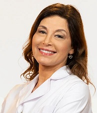

Dra. Laura Mijelshon

La Dra. Laura Mijelshon dirige el Centro Piel y Estética con responsabilidad y respeto por sus pacientes.
Por eso, desde hace más de 20 años realiza tratamientos eficaces y con la última tecnología para el manejo de afecciones dermatológicas y embellecimiento estético.
Es Médica dermatóloga recibida en la Universidad de Buenos Aires y miembro titular de la Sociedad Argentina de Dermatología.
Además, se ha desempeñado como docente de estudios de pre y posgrado en Dermatología de la Universidad de Buenos Aires y Universidad del Salvador.
Ha presentado múltiples trabajos en Congresos científicos y ha asistido a cursos avanzados en Estética y Dermatología estética nacionales e internacionales.
Además ha coordinado sesiones científicas en Congresos de Dermatología y Dermatología Estética de las sociedades científicas, laboratorios y empresas farmacéuticas más reconocidas.
Equipo del centro Nina Beauty
Nuestro equipo está compuesto por un grupo de profesionales dermatólogos y cosmiatras que brindan una atención personalizada y con conocimiento integral de todos los tratamientos disponibles para cuidar la salud de la piel y mejorar su aspecto. Los integrantes del Centro Piel y Estética Dra. Laura Mijelshon ofrecen un trato cálido, respetuoso y con avanzado conocimiento en tratamientos dermatológicos.